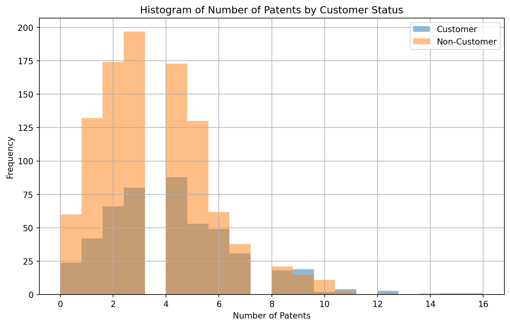
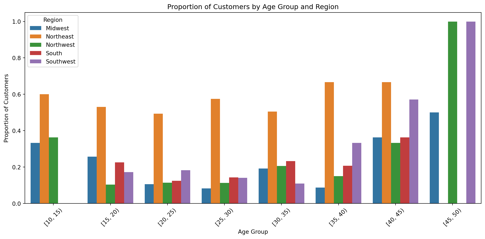
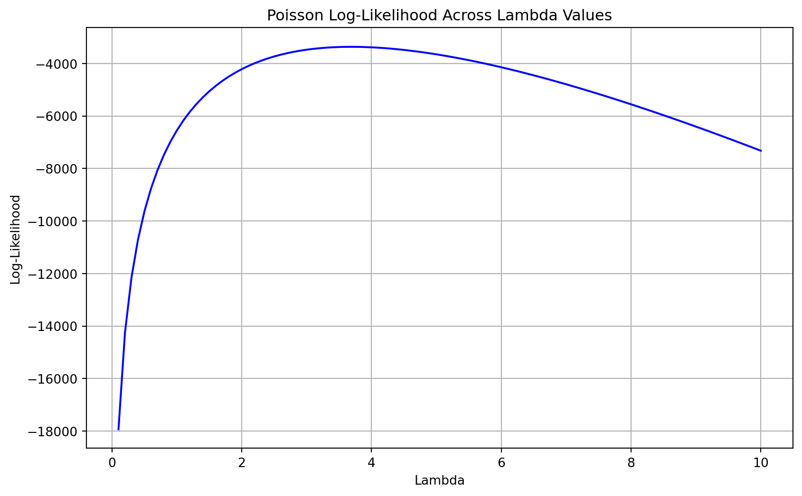
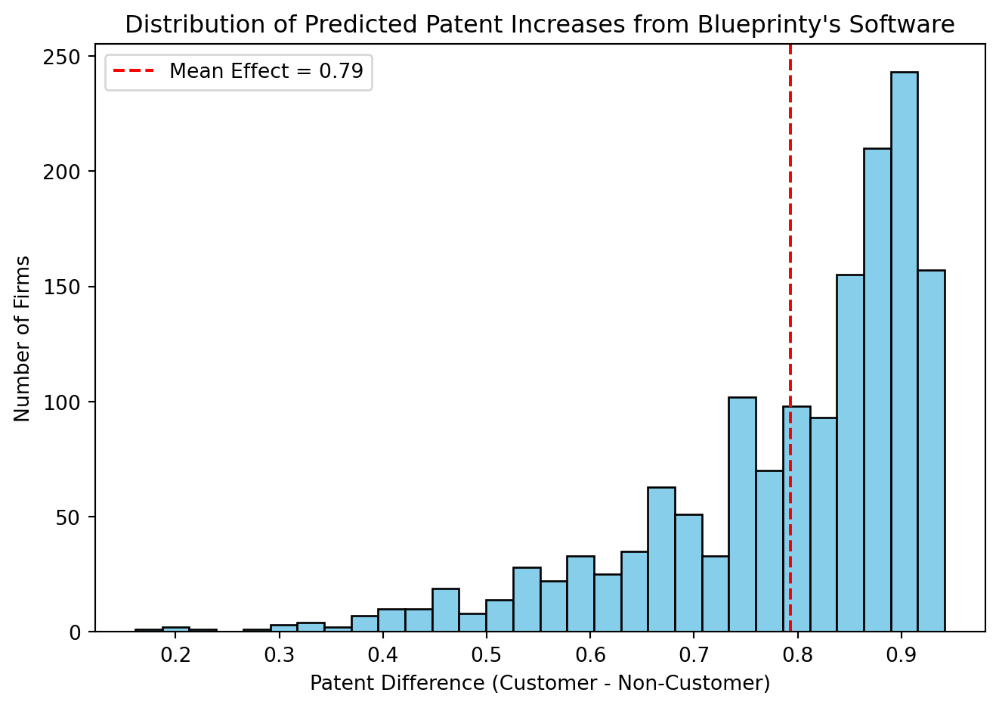

Poisson Regression Examples
Blueprinty Case Study
Introduction
Blueprinty is a small firm that makes software for developing blueprints specifically for submitting patent applications to the US patent office. Their marketing team would like to make the claim that patent applicants using Blueprinty’s software are more successful in getting their patent applications approved. Ideal data to study such an effect might include the success rate of patent applications before using Blueprinty’s software and after using it. Unfortunately, such data is not available.
However, Blueprinty has collected data on 1,500 mature (non-startup) engineering firms. The data include each firm’s number of patents awarded over the last 5 years, regional location, age since incorporation, and whether or not the firm uses Blueprinty’s software. The marketing team would like to use this data to make the claim that firms using Blueprinty’s software are more successful in getting their patent applications approved.
Data
Number of Patents by Customer Status
Blueprinty customers are not selected at random. It may be important to account for systematic differences in the age and regional location of customers vs non-customers.
Compare regions and ages by customer status
region Midwest Northeast Northwest South Southwest
iscustomer
0 187 273 158 156 245
1 37 328 29 35 52 count mean std min 25% 50% 75% max
iscustomer
0 1019.0 26.101570 6.945426 9.0 21.0 25.5 31.25 47.5
1 481.0 26.900208 7.814678 10.0 20.5 26.5 32.50 49.0/tmp/ipykernel_48970/2292223956.py:7: FutureWarning:
The default of observed=False is deprecated and will be changed to True in a future version of pandas. Pass observed=False to retain current behavior or observed=True to adopt the future default and silence this warning.

From this histogram we can see higher level of customers in the Northeast region, age seems to be fairly constant between regions, and to confirm these inital assumptions a logistic regression was run:
import pyrsm as rsm
# Run logistic regression
clf_1 = rsm.model.logistic(
data=blue,
rvar="iscustomer",
lev=1, # If iscustomer is numeric
evar=["age_group", "region"]
)
clf_1.summary()Logistic regression (GLM)
Data : Not provided
Response variable : iscustomer
Level : 1
Explanatory variables: age_group, region
Null hyp.: There is no effect of x on iscustomer
Alt. hyp.: There is an effect of x on iscustomer
OR OR% coefficient std.error z.value p.value
Intercept 0.222 -77.8% -1.505 0.366 -4.106 < .001 ***
age_group[Interval(15, 20, closed='left')] 0.865 -13.5% -0.145 0.354 -0.411 0.681
age_group[Interval(20, 25, closed='left')] 0.667 -33.3% -0.405 0.345 -1.175 0.24
age_group[Interval(25, 30, closed='left')] 0.759 -24.1% -0.275 0.345 -0.798 0.425
age_group[Interval(30, 35, closed='left')] 0.781 -21.9% -0.247 0.351 -0.704 0.482
age_group[Interval(35, 40, closed='left')] 1.172 17.2% 0.159 0.370 0.428 0.668
age_group[Interval(40, 45, closed='left')] 2.252 125.2% 0.812 0.448 1.813 0.07 .
age_group[Interval(45, 50, closed='left')] 6.455 545.5% 1.865 0.971 1.921 0.055 .
region[Northeast] 6.648 564.8% 1.894 0.202 9.371 < .001 ***
region[Northwest] 0.976 -2.4% -0.024 0.274 -0.087 0.931
region[South] 1.126 12.6% 0.118 0.264 0.449 0.654
region[Southwest] 1.143 14.3% 0.134 0.239 0.560 0.576
Signif. codes: 0 '***' 0.001 '**' 0.01 '*' 0.05 '.' 0.1 ' ' 1
Pseudo R-squared (McFadden): 0.136
Pseudo R-squared (McFadden adjusted): 0.124
Area under the RO Curve (AUC): 0.735
Log-likelihood: -812.401, AIC: 1648.802, BIC: 1712.545
Chi-squared: 255.763, df(11), p.value < 0.001
Nr obs: 1,498 (2 obs. dropped)/opt/conda/lib/python3.12/site-packages/xgboost/core.py:377: FutureWarning:
Your system has an old version of glibc (< 2.28). We will stop supporting Linux distros with glibc older than 2.28 after **May 31, 2025**. Please upgrade to a recent Linux distro (with glibc >= 2.28) to use future versions of XGBoost.
Note: You have installed the 'manylinux2014' variant of XGBoost. Certain features such as GPU algorithms or federated learning are not available. To use these features, please upgrade to a recent Linux distro with glibc 2.28+, and install the 'manylinux_2_28' variant.
Results show…
- Region is a stronger predictor than age when it comes to customer likelihood.
- 📍 Northeast region stands out:
- Individuals in the Northeast are 6.6× more likely to be customers than those in the Midwest (statistically significant, p < 0.001).
- Older age group (45–50) shows higher odds of being customers (OR ≈ 6.5), but result is marginally significant (p ≈ 0.055). Also, less data on this age group.
- 📍 Northeast region stands out:
Estimation of Simple Poisson Model
Since our outcome variable of interest can only be small integer values per a set unit of time, we can use a Poisson density to model the number of patents awarded to each engineering firm over the last 5 years. We start by estimating a simple Poisson model via Maximum Likelihood.
Mathematically the likelihood for \(Y \sim \text{Poisson}(\lambda)\). Note that \(f(Y|\lambda) = e^{-\lambda}\lambda^Y/Y!\).
\[ L(\lambda \mid Y_1, \ldots, Y_n) = \prod_{i=1}^n f(Y_i \mid \lambda) = \prod_{i=1}^n \frac{e^{-\lambda} \lambda^{Y_i}}{Y_i!} \]
\[ L(\lambda \mid \mathbf{Y}) = e^{-n\lambda} \lambda^{\sum_{i=1}^n Y_i} \prod_{i=1}^n \frac{1}{Y_i!} \]
\[ \log L(\lambda \mid \mathbf{Y}) = -n\lambda + \left( \sum_{i=1}^n Y_i \right) \log \lambda - \sum_{i=1}^n \log(Y_i!) \]
Plot of lambda on the horizontal axis and the likelihood (or log-likelihood) on the vertical axis for a range of lambdas (use the observed number of patents as the input for Y).

Deriving the MLE for the Poisson Distribution
We start with the log-likelihood function:
\[ \log L(\lambda) = \left( \sum_{i=1}^n Y_i \right) \log \lambda - n\lambda + \text{constant} \]
Taking the derivative with respect to \(\lambda\):
\[ \frac{d}{d\lambda} \log L(\lambda) = \frac{\sum Y_i}{\lambda} - n \]
Setting this equal to zero and solving for \(\lambda\):
\[ \frac{\sum Y_i}{\lambda} = n \quad \Rightarrow \quad \lambda = \frac{\sum Y_i}{n} = \bar{Y} \]
Thus, the maximum likelihood estimate is:
\[ \lambda_{\text{MLE}} = \bar{Y} \]
Lamda MLE from optimization: 3.6847
Estimation of Poisson Regression Model
Next, we extend our simple Poisson model to a Poisson Regression Model such that \(Y_i = \text{Poisson}(\lambda_i)\) where \(\lambda_i = \exp(X_i'\beta)\). The interpretation is that the success rate of patent awards is not constant across all firms (\(\lambda\)) but rather is a function of firm characteristics \(X_i\). Specifically, we will use the covariates age, age squared, region, and whether the firm is a customer of Blueprinty.
Below is an updated likelihood or log-likelihood function with an additional argument to take in a covariate matrix X. Also the parameter of the model has changed from lambda to the beta vector. In this model, lambda must be a positive number, so we choose the inverse link function g_inv() to be exp() so that \(\lambda_i = e^{X_i'\beta}\).
Coefficient Std. Error
Intercept 1.3447 0.0423
Age (std) -0.0577 0.0149
Age^2 (std) -0.1558 0.0195
Northeast 0.0292 0.0557
Northwest -0.0176 0.0644
South 0.0566 0.0839
Southwest 0.0506 0.0566
Customer 0.2076 0.0061Checked results using Python sm.GLM() function.
Generalized Linear Model Regression Results
==============================================================================
Dep. Variable: patents No. Observations: 1500
Model: GLM Df Residuals: 1492
Model Family: Poisson Df Model: 7
Link Function: Log Scale: 1.0000
Method: IRLS Log-Likelihood: -3258.1
Date: Wed, 11 Jun 2025 Deviance: 2143.3
Time: 11:17:35 Pearson chi2: 2.07e+03
No. Iterations: 5 Pseudo R-squ. (CS): 0.1360
Covariance Type: nonrobust
===============================================================================
coef std err z P>|z| [0.025 0.975]
-------------------------------------------------------------------------------
const 1.3447 0.038 35.059 0.000 1.270 1.420
age_std -0.0577 0.015 -3.843 0.000 -0.087 -0.028
age_squared -0.1558 0.014 -11.513 0.000 -0.182 -0.129
Northeast 0.0292 0.044 0.669 0.504 -0.056 0.115
Northwest -0.0176 0.054 -0.327 0.744 -0.123 0.088
South 0.0566 0.053 1.074 0.283 -0.047 0.160
Southwest 0.0506 0.047 1.072 0.284 -0.042 0.143
iscustomer 0.2076 0.031 6.719 0.000 0.147 0.268
===============================================================================Results
Each coefficient represents the log-change in the expected count per unit change in that variable.
🔹 Intercept = 1.3447 → When all variables are 0 (e.g., average age, non-customer, reference region), expected log-patents ≈ 1.34 → patents ≈ exp(1.3447) ≈ 3.84
🔹 Customer = 0.2076 → Being a customer is associated with a +0.2076 increase in log-patents → That’s about 23% more patents
🔹 Age (std) = -0.0577, Age² (std) = -0.1558 → Slight negative linear and stronger negative quadratic effect of age → Implies patents peak at middle age and drop off for older firms
🔹 Regions: all relatively small effects; not statistically strong without p-values, but hint at mild differences
So what is the conslusion of the effect of Blueprinty’s software on patent success?
- Created two fake datasets: X_0 and X_1 where X_0 is the X data but with iscustomer=0 for every observation and X_1 is the X data but with iscustomer=1 for every observation. Then, used X_0 and your fitted model to get the vector of predicted number of patents (y_pred_0) for every firm in the dataset, and use X_1 to get Y_pred_1 for every firm. Then subtracted y_pred_1 minus y_pred_0 and take the average of that vector of differences.
# Get the fitted GLM model (assuming you've already run the sm.GLM Poisson model above)
# Model: poisson_results
# Design matrix: X_df
# Create X_0 and X_1
X_0 = X_df.copy()
X_0['iscustomer'] = 0
X_1 = X_df.copy()
X_1['iscustomer'] = 1
# Predict patent counts under both scenarios
y_pred_0 = poisson_results.predict(X_0)
y_pred_1 = poisson_results.predict(X_1)
# Calculate the average treatment effect
delta = y_pred_1 - y_pred_0
average_effect = np.mean(delta)
print(f"Estimated average increase in patents per firm due to Blueprinty's software: {average_effect:.4f}")Estimated average increase in patents per firm due to Blueprinty's software: 0.7928
AirBnB Case Study
Introduction
AirBnB is a popular platform for booking short-term rentals. In March 2017, students Annika Awad, Evan Lebo, and Anna Linden scraped of 40,000 Airbnb listings from New York City. The data include the following variables:
Poisson Regression Model: Number of Bookings by Reviews
Generalized Linear Model Regression Results
==============================================================================
Dep. Variable: number_of_reviews No. Observations: 30160
Model: GLM Df Residuals: 30149
Model Family: Poisson Df Model: 10
Link Function: Log Scale: 1.0000
Method: IRLS Log-Likelihood: -5.2418e+05
Date: Wed, 11 Jun 2025 Deviance: 9.2689e+05
Time: 11:17:35 Pearson chi2: 1.37e+06
No. Iterations: 10 Pseudo R-squ. (CS): 0.6840
Covariance Type: nonrobust
=============================================================================================
coef std err z P>|z| [0.025 0.975]
---------------------------------------------------------------------------------------------
const 3.4980 0.016 217.396 0.000 3.467 3.530
days 5.072e-05 3.91e-07 129.755 0.000 5e-05 5.15e-05
bathrooms -0.1177 0.004 -31.394 0.000 -0.125 -0.110
bedrooms 0.0741 0.002 37.197 0.000 0.070 0.078
price -1.791e-05 8.33e-06 -2.151 0.031 -3.42e-05 -1.59e-06
review_scores_cleanliness 0.1131 0.001 75.611 0.000 0.110 0.116
review_scores_location -0.0769 0.002 -47.796 0.000 -0.080 -0.074
review_scores_value -0.0911 0.002 -50.490 0.000 -0.095 -0.088
room_type_Private room -0.0105 0.003 -3.847 0.000 -0.016 -0.005
room_type_Shared room -0.2463 0.009 -28.578 0.000 -0.263 -0.229
instant_bookable_t 0.3459 0.003 119.666 0.000 0.340 0.352
=============================================================================================Interpretation of Poisson Regression Coefficients
In a Poisson regression with a log-link, coefficients represent log-changes in expected number of reviews.
To interpret them as percent changes, we use the formula:
\[ \text{Percent Change} = \left( \exp(\beta) - 1 \right) \times 100 \]
📊 Effect of Listing Features on Number of Reviews
| Variable | Coefficient (β) | % Change in Expected Reviews | Interpretation |
|---|---|---|---|
instant_bookable_t |
0.346 | +41% | Instantly bookable listings get ~41% more reviews |
room_type_Private room |
-0.011 | -1% | Slightly fewer reviews vs. entire home |
room_type_Shared room |
-0.246 | -22% | Shared rooms get ~22% fewer reviews |
bedrooms |
0.074 | +7.7% | Each additional bedroom → ~8% more reviews |
bathrooms |
-0.118 | -11% | Each additional bathroom → ~11% fewer reviews |
price |
-0.000018 | ~0% | Slightly fewer reviews for higher prices |
review_scores_cleanliness |
0.113 | +12% | Higher cleanliness = more reviews |
review_scores_location |
-0.077 | -7.4% | Surprisingly, higher location scores → fewer reviews |
review_scores_value |
-0.091 | -8.7% | Higher value score = fewer reviews |
days |
0.0000507 | ~+0.005% per day | Older listings have more reviews |
🧠 Summary
- The largest positive effects come from
instant_bookable,cleanliness, andbedrooms. - Shared rooms underperform significantly compared to entire homes.
- Review score for value and location surprisingly have small negative effects, possibly due to multicollinearity or confounding with price.